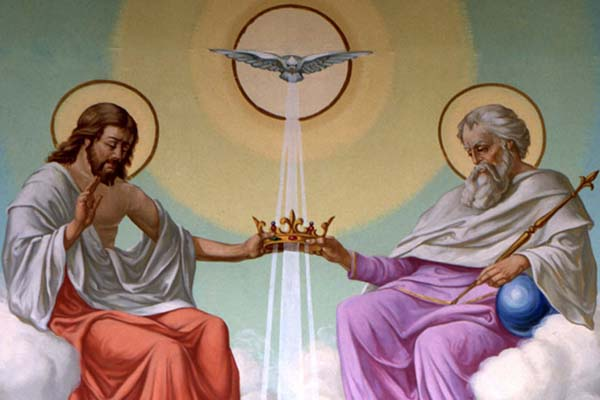

CHRISTIAN LIFE AND VALUES EDUCATION 9
Teacher: Sir Bryan Palaya
The Holy Trinity in Christianity
The Holy Trinity is a central doctrine in Christianity that refers to the belief in one God existing as three distinct persons: the Father, the Son (Jesus Christ), and the Holy Spirit. Each person is considered fully God, co-equal and co-eternal, existing in perfect unity and love.
Breakdown of Each Part:
- The Father: Often referred to as the Creator or God the Father, he is seen as the source and origin of all things, existing eternally without beginning.
- The Son: Jesus Christ, the Son of God, is believed to be the incarnation of God on Earth. He is seen as both fully God and fully human, having lived a perfect life and dying on the cross to redeem humanity from sin.
- The Holy Spirit: The Holy Spirit is the divine presence of God, often described as a force or comforter. It is believed to be actively involved in the world, guiding believers and inspiring them to live faithful lives.
Despite their distinct identities, the Father, Son, and Holy Spirit are not separate parts of God but rather three aspects of the one divine being. This complex concept is often illustrated using analogies, although it remains a mystery that transcends full human comprehension.
Relationship Between the Persons:
The relationships within the Trinity are complex and often described using theological terms. Here's a simplified explanation:
- The Father is said to "beget" the Son, meaning the Son eternally proceeds from the Father in an act of love.
- The Holy Spirit is said to "proceed" from both the Father and the Son, signifying a shared relationship of love and unity.
Equality Within the Trinity:
Although the Father is referred to as having "made" the Son and the Holy Spirit, this doesn't imply any hierarchy or inequality. It refers to the internal relationships within the Godhead, not to creation in the traditional sense. All three persons are believed to be co-eternal, meaning they have always existed and will always exist. They are also considered co-equal, meaning they share the same divine nature, power, and glory.
Why All Three Are Needed:
The concept of the Trinity is essential to Christian understanding of God. It emphasizes God's relational nature, existing as a community of love and self-giving. Each person of the Trinity plays a unique role in salvation and interacting with the world:
- The Father initiates creation and redemption.
- The Son bridges the gap between God and humanity through his incarnation and sacrifice.
- The Holy Spirit indwells believers, guiding them and empowering them to live out their faith.
Together, the Father, Son, and Holy Spirit reveal the fullness of God's love and grace, offering hope and purpose for humanity. It's important to remember that the Holy Trinity is a complex theological concept, and different Christian denominations may have slightly varying interpretations. This explanation provides a basic overview, but further study and exploration are encouraged to gain a deeper understanding.